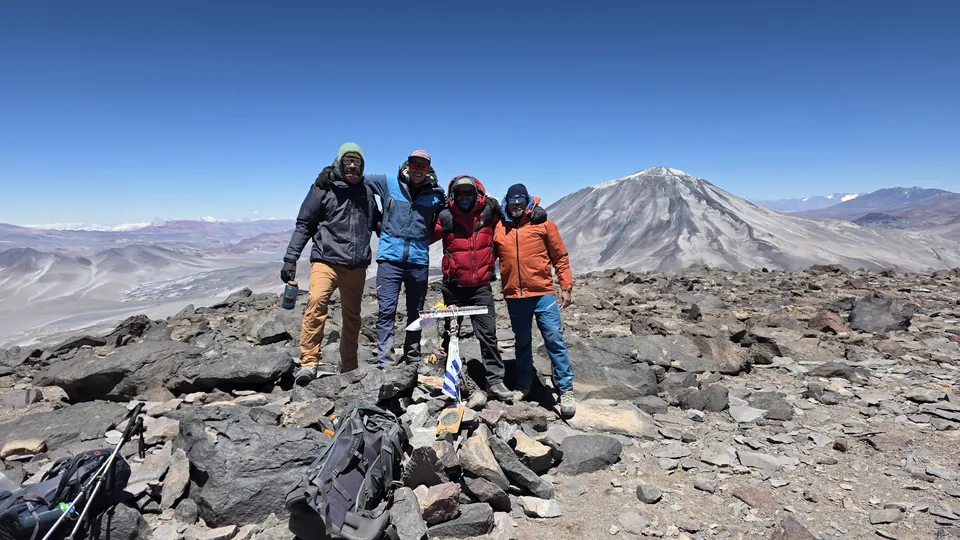

6016 msnm
Ascenso al Volcán San Francisco desde Fiambalá
Tu primer seismil

El Volcán San Francisco es uno de los seismiles más accesibles y espectaculares de la cordillera de los Andes, ubicado sobre la frontera entre Argentina y Chile. Con sus 6016 msnm, ofrece una experiencia ideal para iniciarse a la alta montaña, rodeado de volcanes gigantes, lagunas altiplánicas y los paisajes únicos del Valle de los Seismiles.
Temporada
Noviembre a Abril.
Día 1
Encuentro en Fiambalá, realización de trámites obligatorios y charla técnica de expedición. Traslado al refugio Pastos Largos, ubicado a 3200 msnm.
Día 2
Caminata de aclimatación al cerro Coquena o Pastos Largos, alcanzando los 4100 msnm y regresando luego al refugio.
Día 3
Traslado hacia el refugio Las Grutas, a 4000 msnm, realización de trámites fronterizos y preparación del campamento de altura.
Día 4
Ascenso al cerro Falso Morocho, excelente mirador natural con amplias vistas al Volcán Incahuasi y al Valle de los Seismiles.
Día 5
Ascenso al Volcán Bertrand, superando los 5300 msnm y contemplando su enorme cráter volcánico de más de 4 kilómetros de circunferencia.
Día 6
Jornada de descanso y aclimatación en el refugio Las Grutas, preparando el cuerpo para el intento de cumbre.
Día 7
Intento de cumbre al Volcán San Francisco, alcanzando los 6016 msnm en una extensa jornada de alta montaña rodeada de los gigantes andinos del Valle de los Seismiles.
Día 8
Regreso a Fiambalá. Fin de la expedición.
Prepará tu expedición
Equipo personal
- Pantalón de trekking.
- Pantalón de polar o calza térmica.
- Pantalón impermeable.
- Pantalón interior de primera piel.
- 2 Pares de medias de abrigo alta montaña.
- 2 Pares de medias finas interiores(polipropileno).
- 2 Pares de medias para trekking.
- Botas dobles/rígidas.
- Botas trekking.
- Calzado de descanso tipo crocs.
- Remera interior primera capa manga larga.
- Buzo o campera polar o windstoper.
- Campera de abrigo (primordialmente duvet).
- Campera impermeable.
- Guantes finos primera piel.
- Par de guantes de abrigo impermeables.
- Mitones de duvet.
- Gorra para el sol con visera.
- Gorro de polar o pasamontañas de polar.
- Pañuelo multipropósito tipo Buff.
- Antiparras o lentes para sol, Categoría 4.
- Bastones de trekking.
- Mochila 40/50 litros.
- Linterna frontal (pilas de repuesto).
- Bolsa de dormir (ideal -10º C confort).
- Colchoneta aislante.
- Plato hondo y vaso irrompible.
- Tres botellas o nalgenes de un litro como mínimo.
- Pequeño botiquín personal (medicación personal).
- Protector solar, en lo posible pantalla total, o factor 60 / protector labial.
- Casco.
- Kit de aseo personal, papel higiénico, toallas húmedas.
- 10 Bolsas para residuos.
- Documentos.
- Libros, cuadernos y demás elementos recreativos para los días libres.
Servicios incluidos
- Alojamiento de uso común en refugios Pastos Largos y Las Grutas.
- Transfer in/out dede Fiambala.
- Guías de trekking certificados.
- Carpas en caso de ser necesarias.
- Pensión completa en la montaña.
- Seguro de Accidentes Personales.
- Equipo general de cocina (ollas, calentadores, platos, tasas,cubiertos).
- Botiquín completo de montaña
- Comunicación radios UHF / VHF.
- Reuniones previas informativas.
- Asistencia y coordinación permanente.